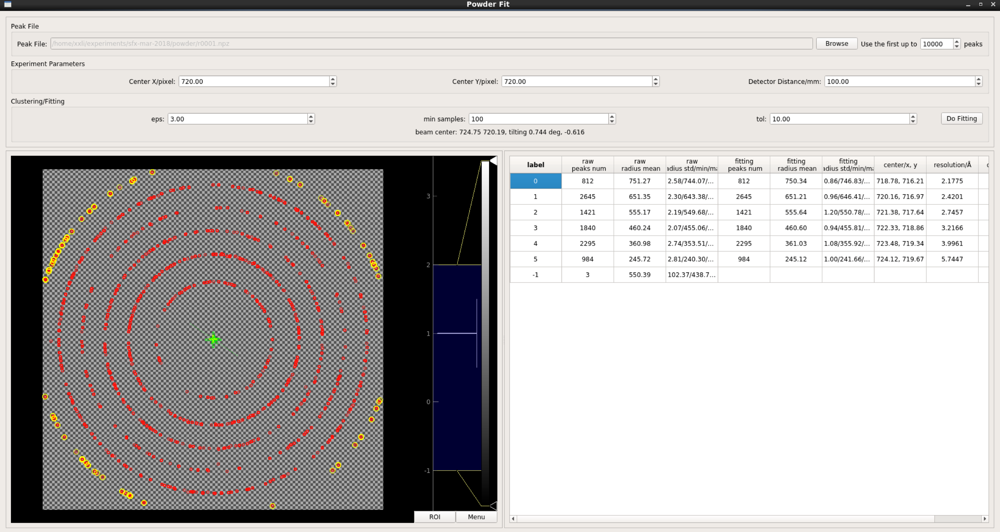

Powder Fit module can calibrate monolithic detector, including beam center, detector distance and tilting angles.

Load peak file generated from file list. Set the initial center and detector distance and clustering parameters. Click Do Fitting, you will get multiple clusters displayed in table. Every cluster has its own center, which is ploted in the left viewer. Users can click any row of right table, the corresponding cluster will be highlighted in left viewer.
Since the powder fit is performed on standard sample, the cell parameter and space group is already known. You can edit the resolution cell by double clicking to optimize the detector distance.
You can find more algorithm details here.